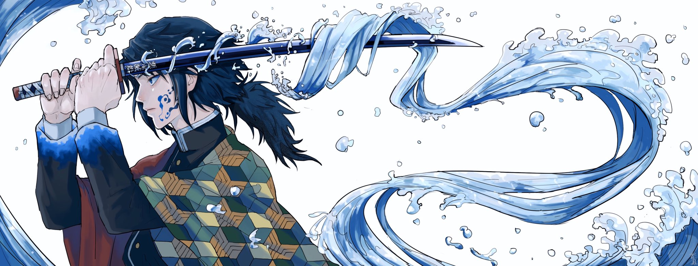

Post #1
Giyu Tomioka (冨岡義勇; Tomioka Giyū) é um personagem recorrente na série de mangás de Gotouge Koyoharu, também adaptado em anime, Demon Slayer: Kimetsu no Yaiba. Ele é descrito como um jovem de 21 anos que tem como ocupação ser um caçador de demônios, estando, inclusive, presente na elite do Corpo de Matança Demoníaca como um dos nove "pilares" da organização. De suma importância na obra, Giyuu foi colocado, algumas vezes, como sustento do protagonista, com quem ele desenvolveu um laço e é bastante próximo, Tanjirou Kamado — ambos, aliás, compartilham o mesmo mestre, Urokodaki Sakonji.
Extremamente capacitado, Tomioka é um usuário da Respiração da Água (水の呼吸; Mizu no Kokyū) e um dos pilares mais fortes; como o nome da sua principal técnica sugere, é detentor do posto de Pilar da Água. O personagem possui uma personalidade tranquila, mas também é dono de um passado triste (envolvendo as mortes da irmã e de um amigo) que, sem ele perceber, foi apagando-se gradativamente, o que fez com que agisse de uma forma melancólica, esquecendo-se das suas responsabilidades e o motivo de estar vivo. Foi com a ajuda de Tanjirou que Giyuu resgatou as suas lembranças. Segue contato do personagem para envio de email.